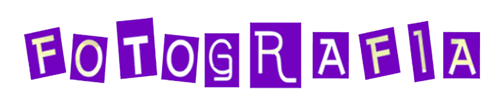

Revelat digital
Passa les teves fotos del paper a la pantalla!

Solucions pensades per donar forma als teus projectes, records i idees.
Passa les teves fotos del paper a la pantalla!
Fotos de carnet per a DNI, NIE o passaport.
Arregla les fotos antigues malmeses i afegeix-hi color!
Conserva els teus records en un suport durador.
Les teves cintes de vídeo dintre d'un USB o d'un DVD.
Troba el suport ideal per conservar i mostrar els teus records.
Explora altres serveis de Fotografia Bergé.